Demo Anomaly Detection
1. Demo Scope
- User registration
- User performs attacks (zero-day = False Negative)
- User performs attacks with Machine Learning active (All blocked)
The user registers on the financial website.
During registration he performs some attacks like Cross Site Scripting, Command Injection and SQLinjection.
The Cross Site Scripting attack is blocked by signatures protection, but both the Command and SQLinjections (zero-day type attacks) go unnoticed because there are no matching signatures.
Those two requests should have been blocked (False Negative).
After enabling and training Machine Learning - Anomaly Detection the zero-day attacks are blocked and recorded in the Attack-Log.
NOTE: You can copy & past the attack samples from the file "AttackSamples.txt" on the Lubuntu desktop
2. Prerequisite
If you have done ML-Bot detection demo please have the bot detection action set to alert.
(Machine Learning > Bot Detection > Finance > Action Settings > Action = Alert)
3. Launching Attack
First attack the Finance Bank website with an attack that is protected by the old-fashioned and False Positive/False Negative (FP/FN) error prone signature based protection.
Browse to http://finance.fortinet.demo/fwb/index.html on the Lubuntu client.
In the next steps you will do the following registrations to demonstrate:
- Normal registration
- Attack with Cross Site Scripting (XSS) attack blocked by WAF signature
- Attack with “zero day” command injection bypassing WAF signatures (FN)
- Attack with “zero day” SQLinjection bypassing WAF signatures (FN)
NOTE: You can cut & past the attack patterns from the
3.1 Normal registration
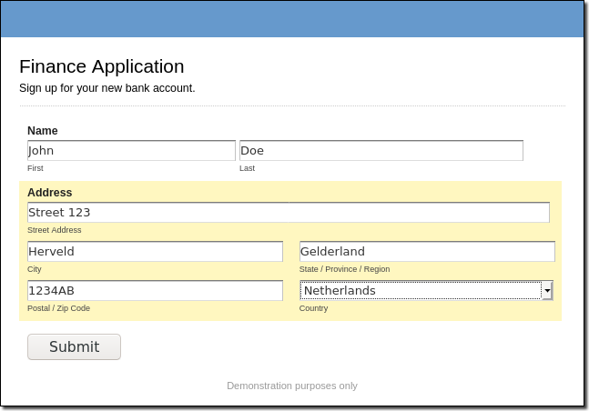
3.2 Registration with XSS
Registration with Cross Site Scripting attack - Blocked by WAF signature
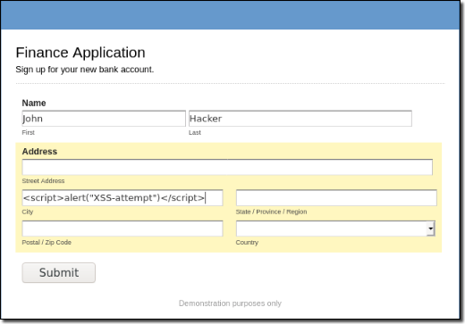
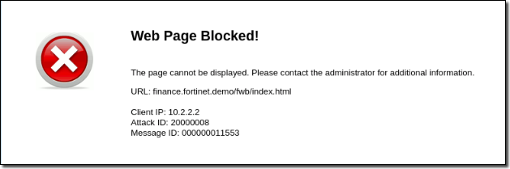
3.3 Registration with Zero-day
Registration with “zero day” remote exploite - Bypassing WAF signatures
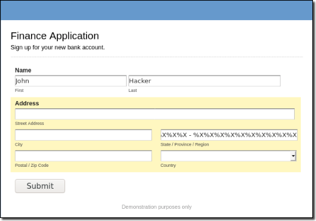
Registration with “zero day” SQLinjection - Bypassing WAF signatures
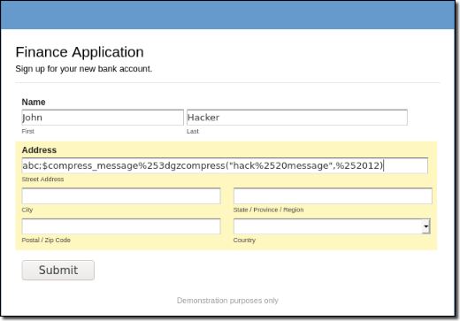
Withough Machine Learning FortiWeb only blocked the Cross Site Scripting attack, both “zero day” attacks passed through unnoticed (FN).
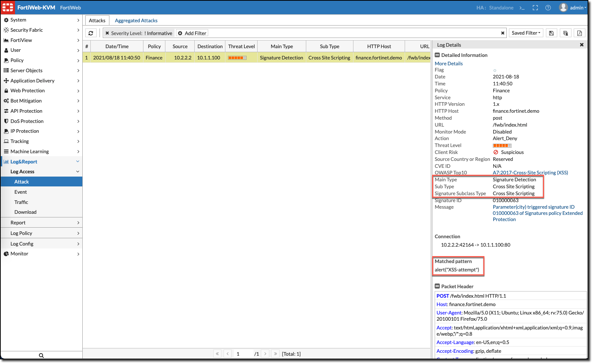
4. Enable ML - Anomaly Detection
In order to have "Machine Learing - Anomaly Detection" protecting the finance website it needs to learn normal traffic.
- Login to FortiWeb
- Browse to Machine Learning > Anomaly Detection
- Double click on Finance Server Policy
- Edit pre-configured finance.fortinet.demo domain via hamburger menu icon.

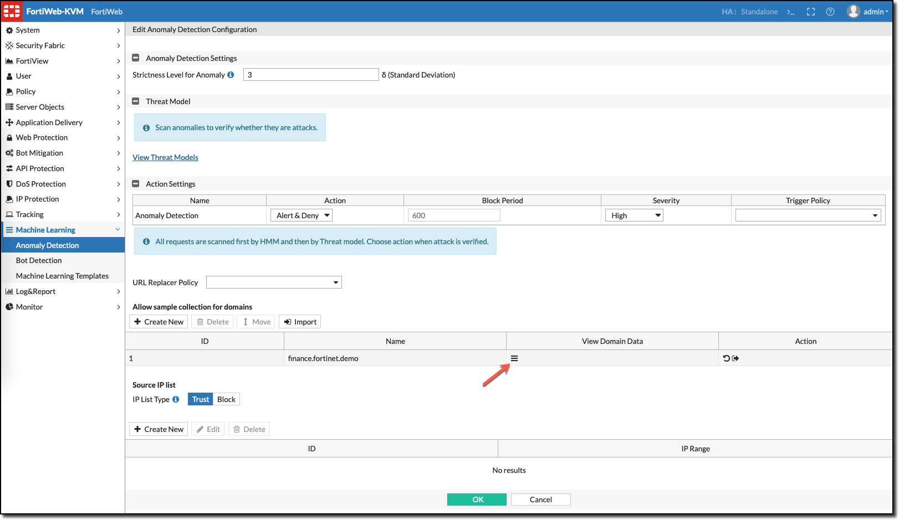
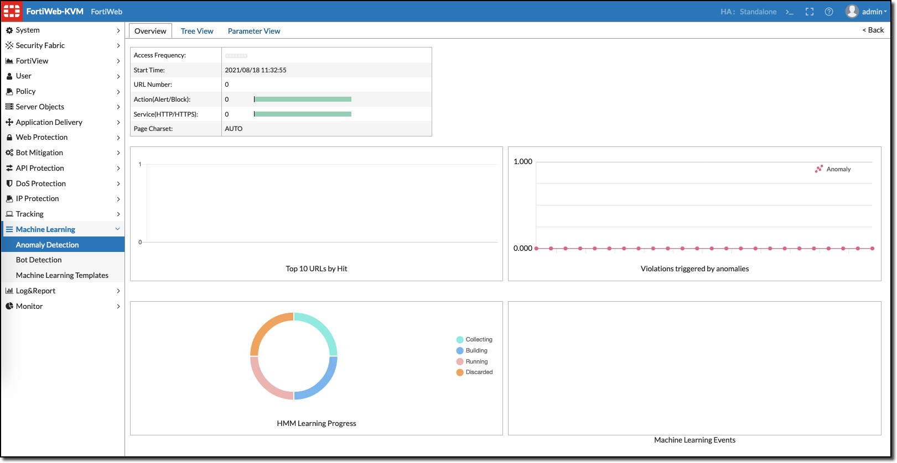
This will provide the ML-AD overview, Tree View and Parameter View info tabs.
- Open the Tree View
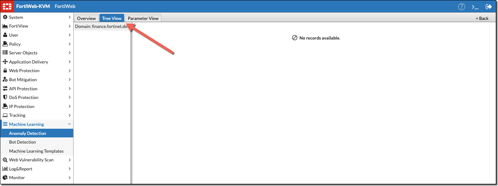
To start the learning process for building the ML mathematical model (HMM), we need to generate web traffic. The requests will trigger the learning process.
Web requests can be generated with the FortiDemo-ML-AD-traffic.sh script on the Lubuntu Client.
- Open a terminal on Lubuntu client
- Start Menu > System Tools > QTerminal
- Start web request script
./FortiDemo-ML-AD-traffic.sh
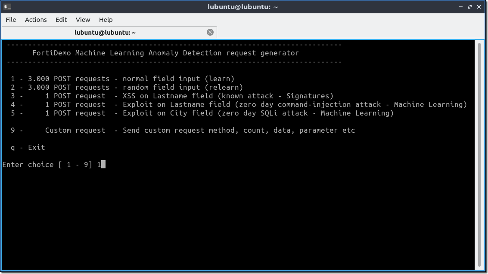
- Enter Choice:
1
Web requests will be send to the finance website and progress is shown for each 100 web requests.
------------------------------------------------------------------------------
FortiDemo Machine Learning Anomaly Detection request generator
------------------------------------------------------------------------------
1 - 3.000 POST requests - normal field input (learn)
2 - 3.000 POST requests - random field input (relearn)
3 - 1 POST request - XSS on Lastname field (known attack - Signatures)
4 - 1 POST request - Exploit on Lastname field (zero day command-injection attack - Machine Learning)
5 - 1 POST request - Exploit on City field (zero day SQLi attack - Machine Learning)
9 - Custom request - Send custom request method, count, data, parameter etc
q - Exit
Enter choice [ 1 - 9] 1
Started: Fri May 15 01:39:02 UTC 2020
Requests : 100 200
On the Tree View you can observe the “Collecting – Building – Running” learning stages by using the embeded Refresh button.
When all parameters are in the Running stage the finance website is protected by Machine Learning – Anomaly Detection.
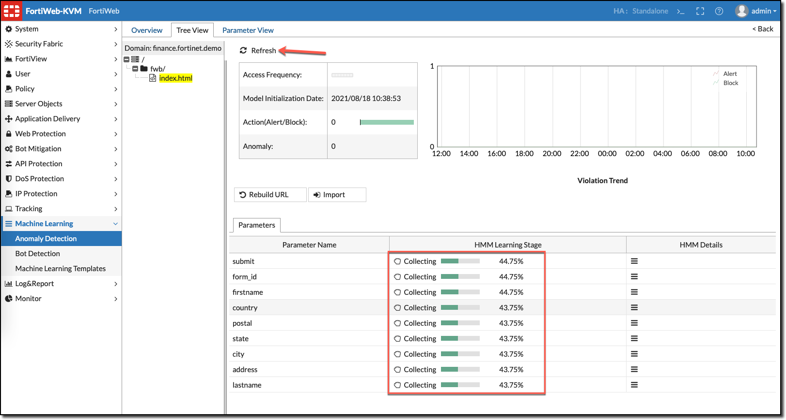
After a few request samples (400) a mathematical model is build and switched into running mode on a parameter by parameter basis.
In the background learning will continue to strengthen the model as part of deep learning.
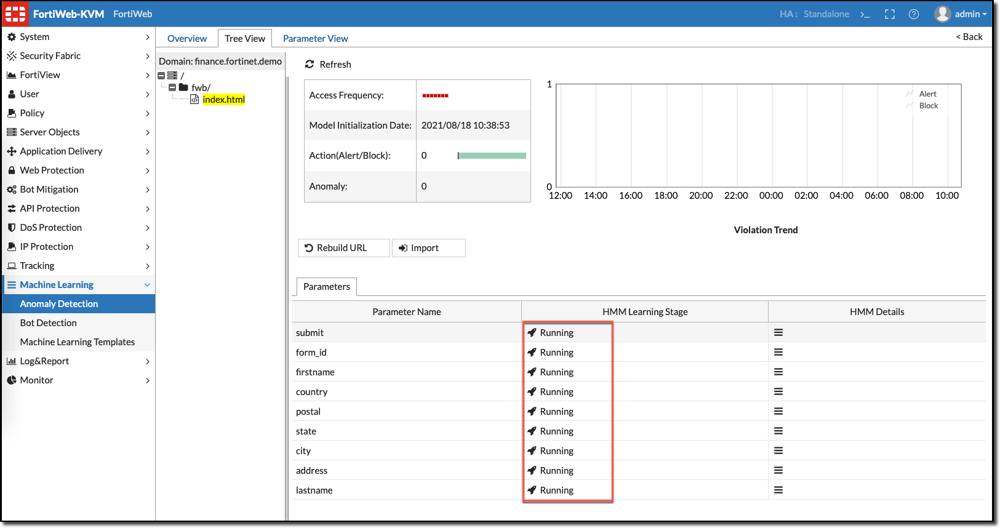
- Double click on parameter firstname to display Distribution of Anomalies and Anomaly Strictness Level.
Here you have the option to manually override the sample collections and perform sample testing.
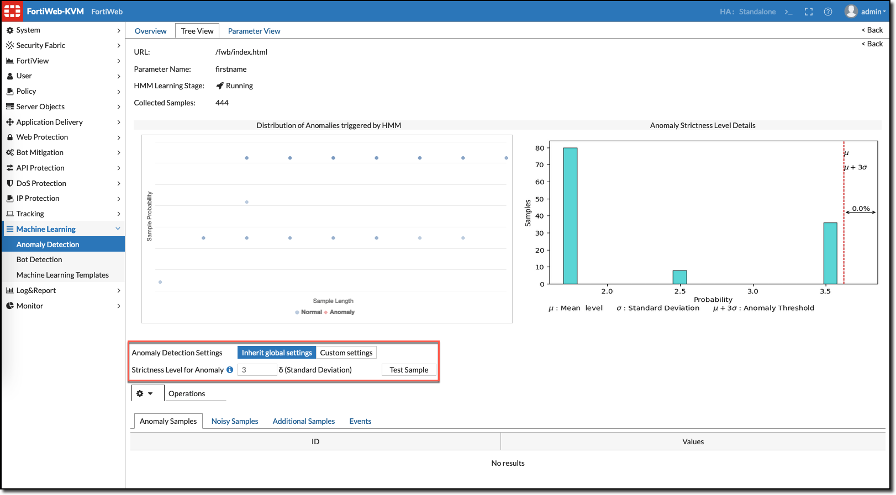
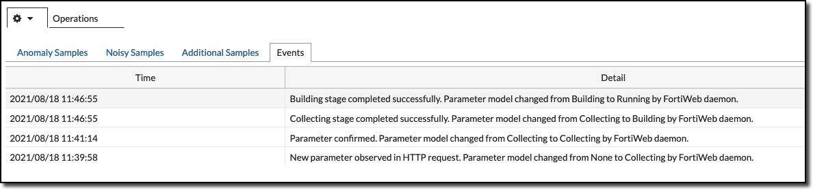
NOTE: At this stage Machine Learning is protecting the web application.
The web request generator should still be running up to 3.000 requests. After it finished observe again the firstname parameter and notice that background learning strengthen the mathematical model.
This can be observed on the Events-tab.
-------------------------------------------------------------------------------
FortiDemo Machine Learning Anomaly Detection request generator
------------------------------------------------------------------------------
1 - 3.000 POST requests - normal field input (learn)
2 - 3.000 POST requests - random field input (relearn)
3 - 1 POST request - XSS on Lastname field (known attack - Signatures)
4 - 1 POST request - Exploit on Lastname field (zero day command-injection attack - Machine Learning)
5 - 1 POST request - Exploit on City field (zero day SQLi attack - Machine Learning)
9 - Custom request - Send custom request method, count, data, parameter etc
q - Exit
Enter choice [ 1 - 9] 1
Started: Fri May 15 10:36:34 UTC 2020
Requests : 100 200 300 400 500 600 700 800 900 1000 1100 1200 1300 1400 1500 1600 1700 1800 1900 2000 2100 2200 2300 2400 2500 2600 2700 2800 2900 3000
Ended : Fri May 15 10:50:31 UTC 2020
Press [Enter] key to continue...
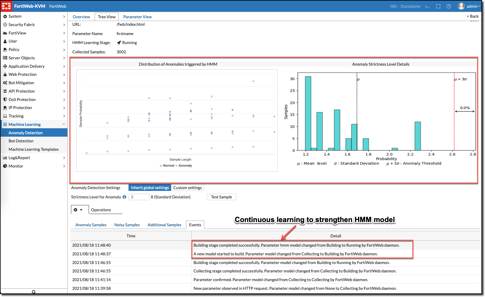
5. Attack Finance Bank website
Now the finance website is protected with Machine Learning, repeat the zero-day attacks that previsously passed through (Fales Negative)
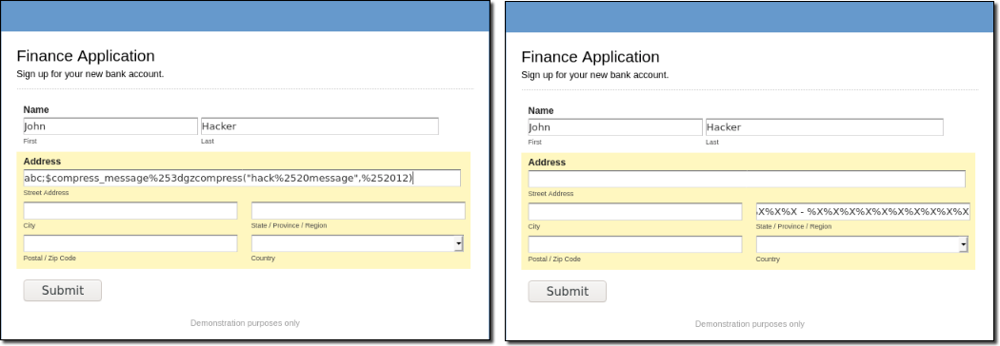
Both "zero day" attacks are now blocked.

The attack log can be viewed to get detailed information about the attacks.
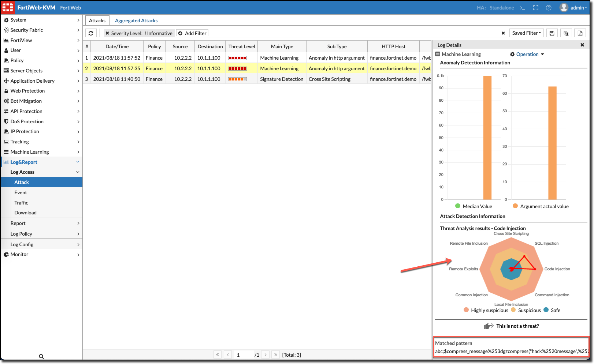
This workshop is now complete.